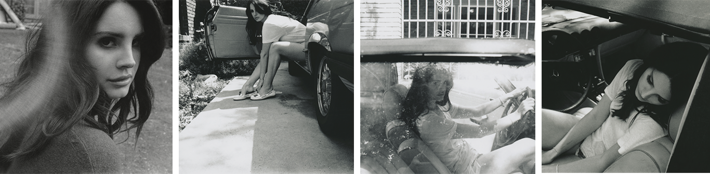
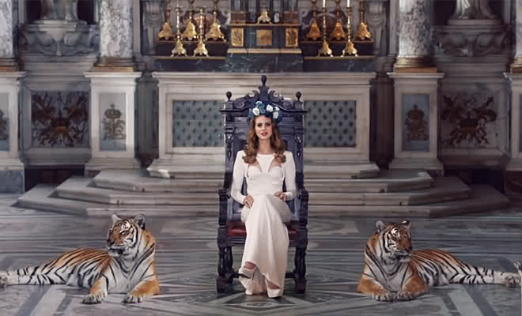
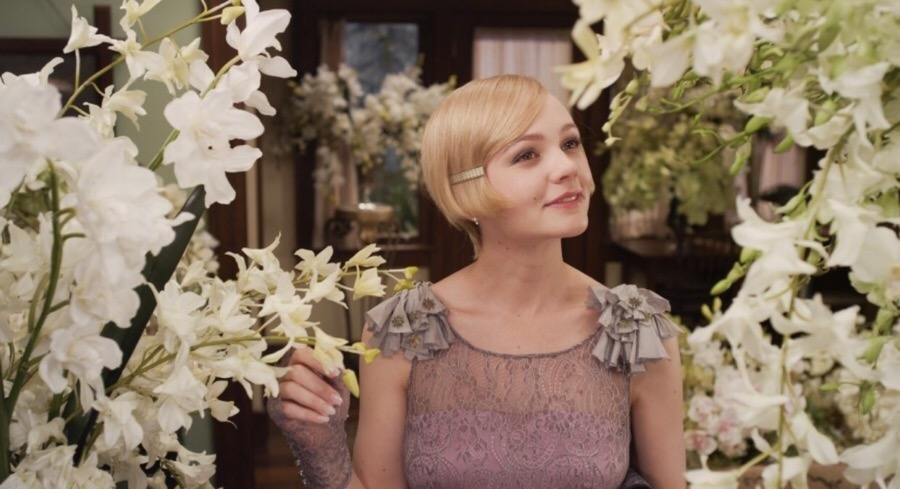
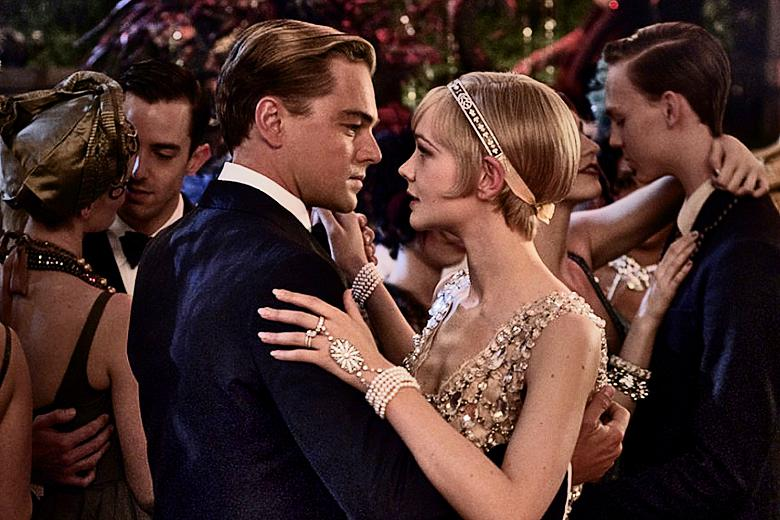
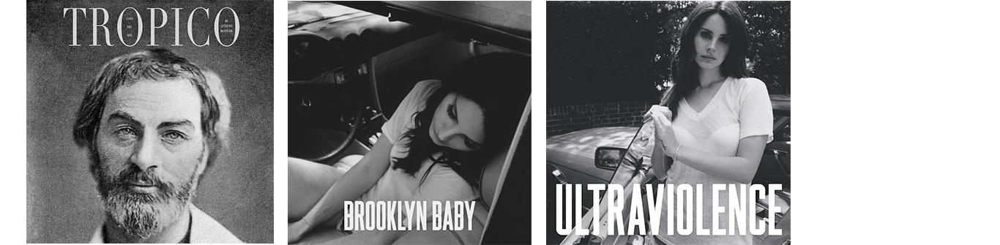

미국의 싱어송라이터. 델 레이는 18살부터 뉴욕의
클럽에서 공연을 하기 시작했고, 21살에는 5
포인트 레코드와 계약을 맺고 처음으로 앨범
녹음을 시작했다. 2011년 7월 델 레이는 기존의
스트랜저 레코드와 인터스코프 레코드, 폴리도르 레코드에도 동시에 계약을 맺었고, 트립합이라는 비주류 장르로 Born to Die라는 히트작을 배출해 전세계적인 인기를 얻게 되었다.
라나 델 레이는 자신의 노래 장르를 새드코어(sad core)라고 언급한 적이 있는데 실제로 라나 델 레이의 노래 대부분이 우울한 느낌의 비트와
사운드를 사용한다. “내 인생의 너무나 외롭게 흘러간 많은 부분이 과연 신의
뜻인지 나는 많이 의아해했다. 그러나 나는 이제 평화를 찾았다.
인간과 세상에서 행복을 찾았다. 그러니 슬픔과 진정한 기쁨이 함께 있다. 두 개의 아름다운 세상이 합쳐진 느낌이랄까”


앨범 속 그녀의 새드코어
BORN TO DIE
정말 우리가 죽기 위해 태어났다(Born To Die)고 생각하는가?
Don't make me sad, don't make me cry
날 슬프게 하지 말아요 날 울게 하지 말아요
Sometimes love is not enough and the road gets tough I don't know why
가끔 사랑은 충분치 않고 인생은 힘들죠, 왜인지 모르겠어요
Keep making me laugh,
날 계속 웃게 해줘요
Lana Del Rey – Born To Die | Born To Die (2011) “아니, 우리는 살기 위해 태어났다. 내가 매우 어렸을 때 나는 나를 비롯해 엄마, 아빠, 그리고 내 주위의 모든 사람이 언젠가는 죽을 거라는 생각에 익사할만큼 깊이 빠졌었다. 철학적 위기에 빠졌었달까? 우리가 필멸의 존재라는 믿기 힘든 사실이 나의 경험을 우울하게 만든 것 같다.”


YOUNG AND
BEAUTIFULWill you still love me
When I'm no longer young and beautiful?
Will you still love me
When I got nothing but my aching soul?
I know you will, I know you will
I know that you will
Will you still love me when I'm no longer beautiful?Lana Del Rey – Young and Beautiful | The Great Gatsby OST(2013)무엇보다 라나 델 레이의 종잡을 수 없는 문화적 취향은 뉴욕의 포담 대학에서 형이상학을 공부한 한 음악가가 신과 과학, 우주의 문제를 걱정한다는 데서 오는 어떤 몽환성으로 수렴되었다. 언론은 계속 그녀를 현실 세계의 그물망으로 끌어들이려 했다. 그럴수록 라나 델 레이는 추상적인 세계로 도망갔다. 계속 들볶는다 싶으면, 사람들이 소문과 가십으로만 접했던 대중음악계의 현실을 자신의 서사에 담아 적나라하게 폭로해 버렸다. 이는 갈등을 더 키우는 방법이 아니냐고 반문할 수 있겠다.
허나 어떤 경우에 따라 명성 문화 내에서 이런 자기 폭로는 사람들의 부정적인 관심을 일순간만 키우는 기능만 할 뿐, 외려 인기 확장에 도움이 되기도 한다. 그럼으로써 그녀는 사람들이 속닥거리는 현실이 지향하는 목표(한 유명인의 추락)에서 도망쳐 나오는 것이다.

우울의 리더십을 뒷받침하는 문화적 소양라나 델 레이가 90년대 선배들과 차이가 있다면, 우울의 리더십을 뒷받침하는 문화적 소양을 적극적으로 노출시켰다는 점이다. 라나 델 레이는 여러 인터뷰에서 자신에게 영향을 준 뮤지션, 시인, 영화에 관해 자주 이야기했다. 이는 지적 흐름을 찾는 데 관심이 많은 저널리즘의 속성을 건드린 요인이었을 것이다.
엘비스 프레슬리, 프랭크 시나트라, 건스 앤 로지스, 브루스 스프링스틴, 에이미 와인하우스, 앨런 긴즈버그, 월트 휘트먼, 블라디미르 나보코프, 스콧 피츠제럴드, 셰익스피어, [대부], [아메리칸 뷰티] 등등. 이 같은 라나 델 레이의 문화적 섭식력은 그녀의 음악 세계를 비판하든 지지하든 호기심을 자극하는 지점이었다.